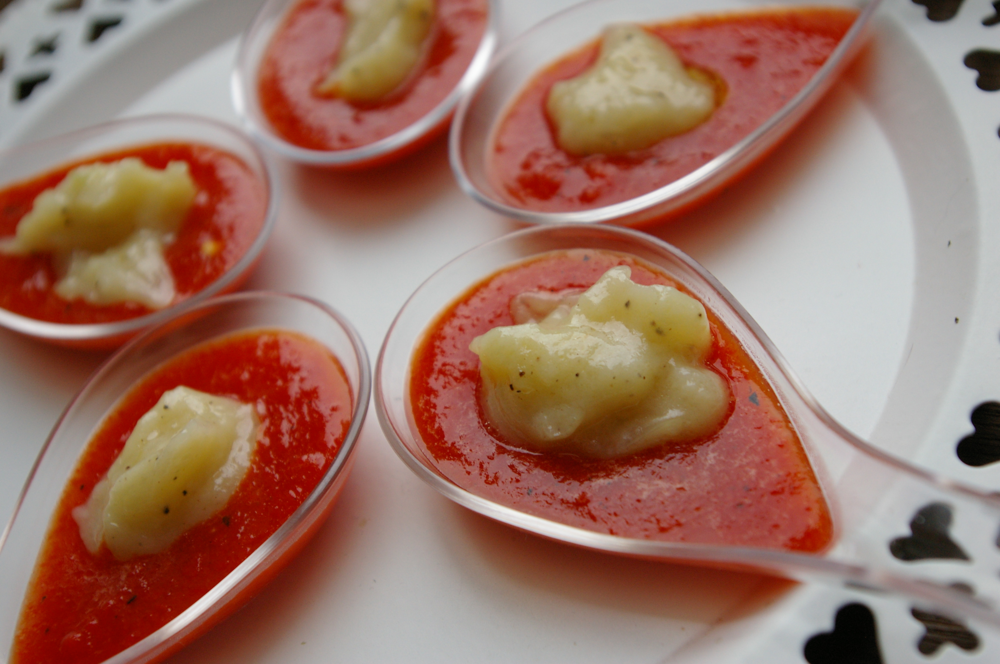

Bouchées de piquillos à la crème d'ail. 
 1h
1h- Difficulté :

- Technique(s) : Gélification
Ingrédients
Ck
Caraghénane kappa
- 1 tête d’ail frais
- Poivre et huile d’olive
- 50g de piquillos en bocal
- 5c d’eau
- 0,5g de Caraghénane kappa

Préparation
- Faire cuire l’ail entier 20mn à la vapeur,
- Laisser refroidir et séparer les gousses. Puis prélever la chair de l’ail en pressant sur les gousses,
- Ajouter du poivre et verser l’huile en filet,
- Mélanger à la fourchette.
- Mixer les piquillos et l’eau jusqu’à obtenir une purée fine,
- Ajouter le Kappa en pluie, mélanger,
- Porter à 70°C puis retirer du feu,
- Verser dans les cuillères et poser une noix de crème d’ail
- Laisser refroidir 30 minutes.